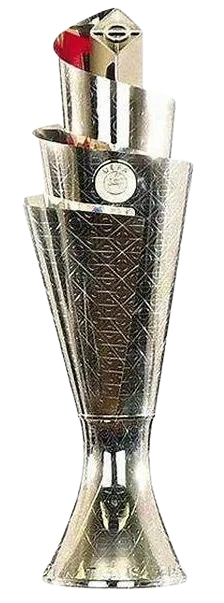

Final Four — Liga A

Os vencedores dos 4 grupos da Liga A (A1 a A4) disputam a Final Four em jogo único: meias-finais, jogo de 3º lugar e final. Os confrontos abaixo já vêm com os atuais líderes de cada grupo — ajusta os emparelhamentos e os placares como quiseres.
Campeões da Nations League
Edição 2026/2027
Preencha o pódio desta edição assim que a Final Four for disputada.